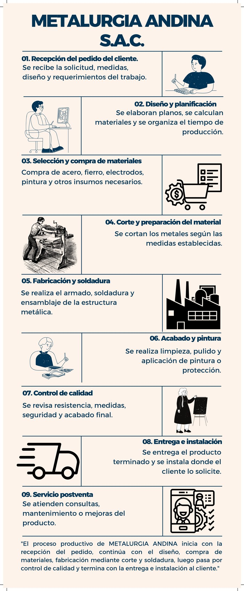

Documentos de fundación y gestión, manual de funciones, reglamento interno, plan estratégico y proceso productivo de METALURGIA ANDINA S.A.C.
Toda empresa dedicada a la fabricación de estructuras metálicas y a la prestación de servicios metalúrgicos requiere contar con documentos que respalden su creación, organización y funcionamiento. Estos documentos permiten establecer la identidad legal de la empresa, definir su estructura organizacional, regular sus actividades internas y garantizar el cumplimiento de las normas comerciales, tributarias, laborales y de seguridad industrial.
Documento inicial mediante el cual los socios manifiestan su voluntad de constituir la empresa: razón social, capital aportado, domicilio fiscal en Arequipa, objeto social y forma de administración.
Elaborada por un notario público, formaliza la constitución de la empresa y le otorga validez legal para su inscripción en Registros Públicos.
Permite que la empresa adquiera personalidad jurídica y desarrolle legalmente sus actividades dentro del sector metalúrgico.
Emitido por la SUNAT; identifica a la empresa como contribuyente y le permite emitir comprobantes de pago y declarar impuestos.
Autorización de la municipalidad correspondiente para desarrollar actividades de fabricación y servicios industriales en el establecimiento.
Protege legalmente el nombre METALURGIA ANDINA S.A.C., su logotipo y demás elementos distintivos frente a terceros.
Normas internas, derechos y obligaciones de los socios, forma de administración y toma de decisiones.
Representación gráfica de la estructura organizacional: Gerencia, Administración, Producción, Ventas y Seguridad y Calidad.
Describe funciones, responsabilidades, competencias y requisitos de cada puesto de trabajo.
Normas sobre horarios, disciplina, permisos, obligaciones y derechos de los trabajadores.
Define la estructura organizacional y las funciones específicas de cada área y cargo.
Misión, visión, objetivos, metas y estrategias para el crecimiento y posicionamiento en el mercado metalúrgico.
Actividades del año, responsables, recursos necesarios, cronograma e indicadores de cumplimiento.
Procesos paso a paso: compra de materiales, recepción de insumos, corte, soldadura, ensamblaje, acabado, control de calidad y entrega.
Estándares para garantizar la calidad de las estructuras, la satisfacción del cliente y la mejora continua.
Promueve honestidad, responsabilidad, respeto, trabajo en equipo, transparencia y compromiso con clientes y sociedad.
Registro de materias primas, herramientas, maquinaria, equipos, productos terminados y demás activos.
Medidas preventivas durante el corte, soldadura, manipulación de maquinaria, montaje y demás procesos metalúrgicos.
Los documentos de fundación y gestión constituyen la base legal, administrativa y organizacional de METALURGIA ANDINA S.A.C., y contribuyen a mejorar la eficiencia operativa, fortalecer la confianza de clientes y proveedores, promover la seguridad de los trabajadores y asegurar el crecimiento sostenible de la empresa.
El Manual de Organización y Funciones (MOF) es un documento administrativo que establece la estructura organizacional de la empresa y define las funciones, responsabilidades, autoridad y perfil de cada cargo. Su finalidad es organizar el trabajo, evitar la duplicidad de funciones y asegurar que cada colaborador conozca claramente sus responsabilidades.
Gerente General, con cuatro áreas bajo su dirección: Administración, Producción, Ventas y Seguridad y Calidad. Cada área cumple una función específica para garantizar el buen funcionamiento de METALURGIA ANDINA.
Todos los trabajadores deberán cumplir con el horario establecido, respetar las funciones asignadas, utilizar correctamente los equipos de protección personal, mantener orden y limpieza en el área de trabajo, cuidar las herramientas y maquinaria, trabajar con responsabilidad y ética, y brindar un servicio de calidad al cliente.
El MOF permite organizar el trabajo, evitar la duplicidad de funciones, mejorar la comunicación entre áreas, incrementar la productividad, facilitar la capacitación del personal y evaluar su desempeño. Es una herramienta fundamental para el crecimiento de METALURGIA ANDINA, ya que cada trabajador conoce claramente sus funciones, responsabilidades y nivel de autoridad, logrando un servicio más eficiente y de mayor calidad para los clientes.
Documento que establece la misión, visión, objetivos, metas y estrategias para el crecimiento y posicionamiento de la empresa en el mercado metalúrgico.
Personal capacitado, buena ubicación, productos de calidad.
Mayor demanda de productos metalúrgicos y captación de nuevos clientes empresariales.
Empresa nueva en el mercado, alta inversión inicial, marca poco conocida.
Alta competencia en el sector metalúrgico, variación en el precio de las materias primas y cambios económicos que afectan la demanda.
El Reglamento de Organización y Funciones (ROF) es un documento que establece la estructura interna de la empresa, define las áreas, cargos, funciones y responsabilidades de cada trabajador. Su finalidad es evitar desorden, mejorar la comunicación y lograr que cada área cumpla sus objetivos dentro de la empresa.
Los trabajadores deberán cumplir horarios establecidos, respetar las funciones asignadas, utilizar equipos de protección personal, mantener orden y limpieza, trabajar en equipo y cuidar máquinas y materiales.
La comunicación será vertical (gerente → trabajadores) y horizontal (entre áreas para coordinar actividades), lo que permite evitar errores y mejorar la producción.
El Reglamento de Organización y Funciones de METALURGIA ANDINA S.A.C. es una herramienta que permite organizar la empresa, asignando funciones y responsabilidades a cada área. Gracias a este reglamento se logra una mejor coordinación, seguridad y eficiencia en las operaciones.
El proceso productivo de METALURGIA ANDINA inicia con la recepción del pedido, continúa con el diseño, la compra de materiales y la fabricación mediante corte y soldadura, luego pasa por el control de calidad y termina con la entrega e instalación al cliente.
Se recibe la solicitud, medidas, diseño y requerimientos del trabajo.
Se elaboran planos, se calculan materiales y se organiza el tiempo de producción.
Compra de acero, fierro, electrodos, pintura y otros insumos necesarios.
Se cortan los metales según las medidas establecidas.
Se realiza el armado, soldadura y ensamblaje de la estructura metálica.
Se realiza limpieza, pulido y aplicación de pintura o protección.
Se revisa resistencia, medidas, seguridad y acabado final.
Se entrega el producto terminado y se instala donde el cliente lo solicite.
Se atienden consultas, mantenimiento o mejoras del producto.
